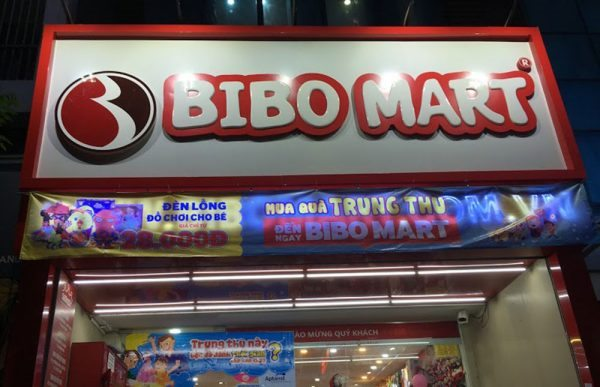

Nhu cầu làm biển quanh Văn Quán, Hà Đông
Khu vực Văn Quán, Hà Đông, Hà Nội có nhiều cửa hàng mặt phố, văn phòng, quán ăn uống, cafe, nhà thuốc, phòng khám và dịch vụ bán lẻ. Khi làm biển, cần ưu tiên khả năng nhìn từ xa, độ sáng buổi tối và bố cục đủ rõ để khách đi ngang nhận ra nhanh.
- Biển cửa hàng bán lẻ, shop, đại lý cần màu rõ và dễ nhìn từ đường.
- Biển nhà thuốc, phòng khám cần chữ lớn, sáng đều và thông tin dễ đọc.
- Biển cafe, quán ăn cần nổi bật buổi tối và có điểm nhận diện riêng.
- Cửa hàng mở mới cần tối ưu chi phí khai trương nhưng vẫn giữ mặt tiền gọn.
Khu vực phục vụ
Nhận tư vấn và báo giá theo ảnh mặt tiền quanh các tuyến/khu vực sau:
- Văn Quán
- Nguyễn Trãi
- Trần Phú
- Quang Trung
- Mỗ Lao
- Vạn Phúc
- Ngô Thì Nhậm
- Phùng Hưng
- Tố Hữu
- Lê Trọng Tấn
Mẫu biển tham khảo theo ngành
Các ảnh dưới đây dùng để tham khảo kiểu mặt tiền, ánh sáng và bố cục. Khi báo giá thực tế cần chốt kích thước, vật liệu, vị trí lắp và điều kiện thi công.


Liên kết dịch vụ liên quan
Câu hỏi thường gặp
Có nhận làm biển tại Văn Quán Hà Đông không?
Có. Nhận tư vấn, sản xuất, lắp đặt và sửa biển quanh Văn Quán, Nguyễn Trãi, Trần Phú, Mỗ Lao, Quang Trung và khu Hà Đông.
Cửa hàng nhỏ nên chọn biển gì để tiết kiệm?
Có thể dùng biển bạt Hiflex, hộp đèn nhỏ hoặc alu chữ nổi tùy ngân sách và thời gian sử dụng.
Có làm biển nhà thuốc/phòng khám không?
Có. Cần ưu tiên chữ dễ đọc, ánh sáng đều, bố cục sạch và thông tin liên hệ rõ.
Có khảo sát trước khi thi công không?
Có thể khảo sát nếu biển lớn, vị trí cao, cần kiểm tra khung cũ hoặc nguồn điện.